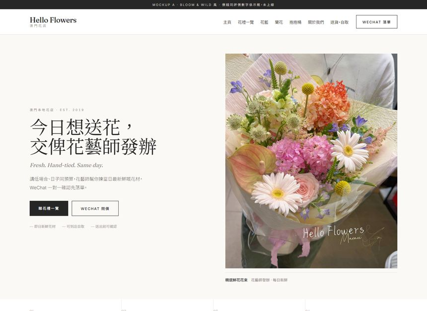
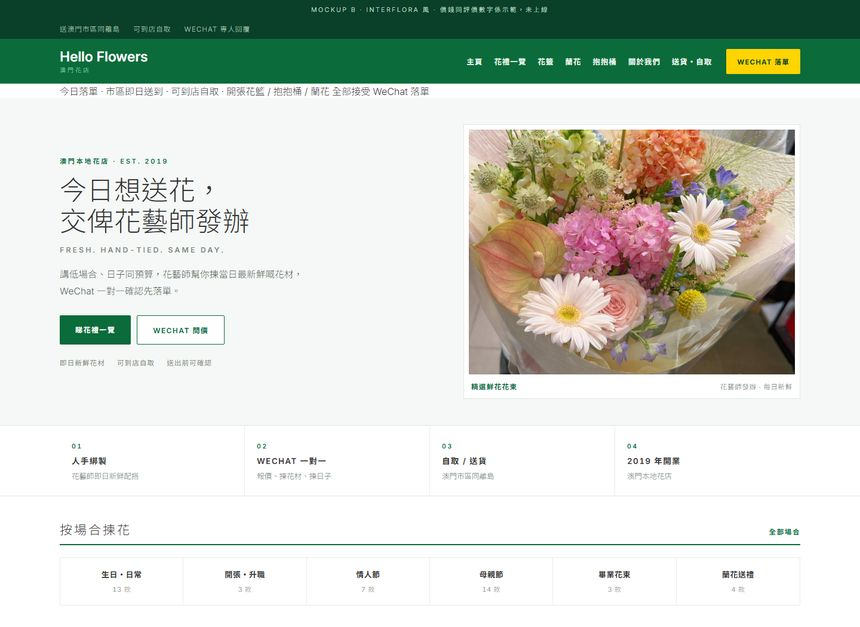
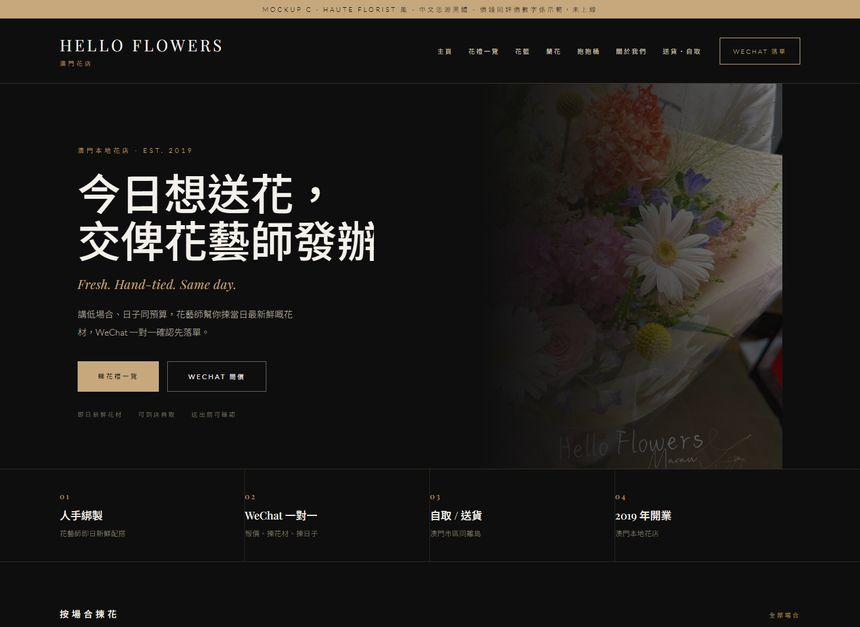
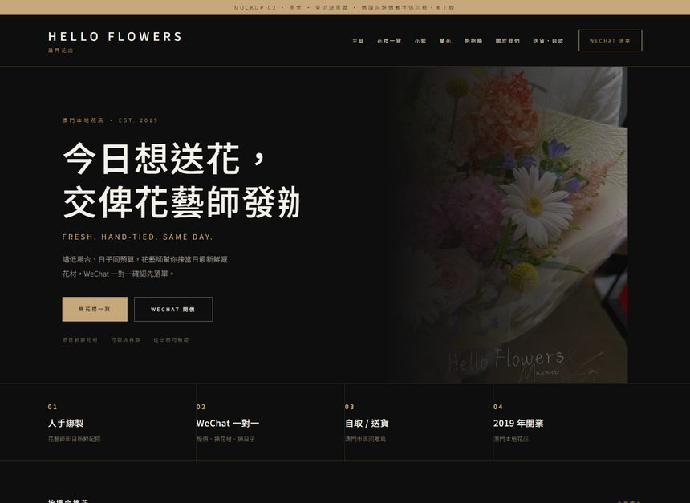
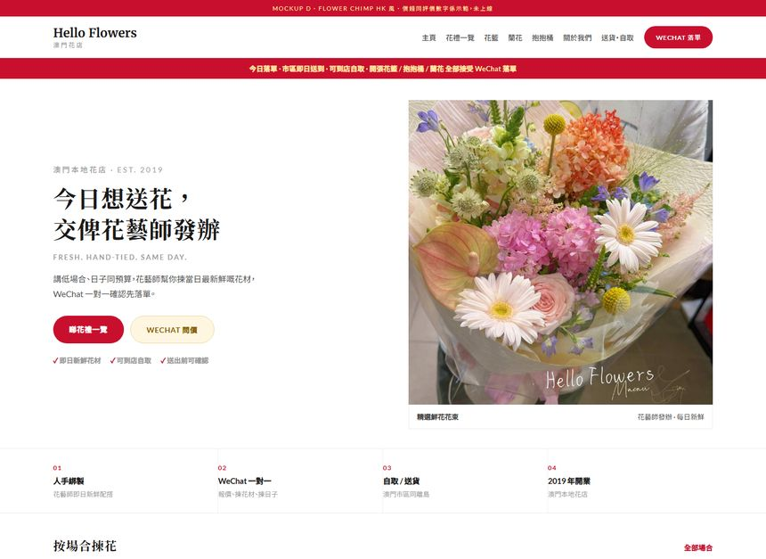
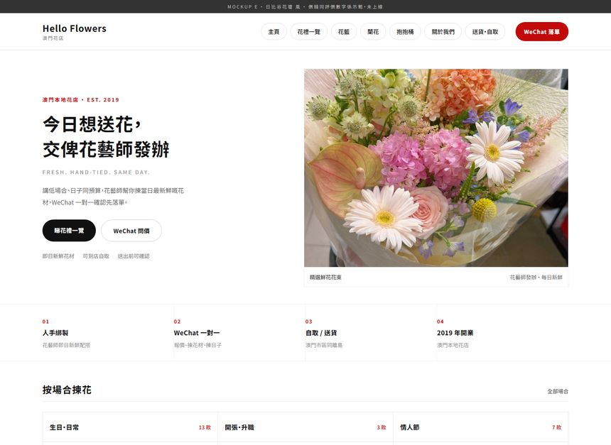

上一版用系統字所以顯得普通。呢版逐个跟真實站 computed style 做：Bloom & Wild 用 Tiempos Headline、Interflora 用 Söhne 300 細字重、Haute Florist 用 Playfair Display + 5px 大寫字距、Flower Chimp 用 Merriweather、日比谷花壇 用 Yu Gothic 膠囊 nav。

Fraunces 襯線（Tiempos Headline 代替）＋ Inter（Unica 77 代替）｜圓角 0px、細字重、無陰影
◈ 當代 editorial，最斯文
㩒入去睇（有滾動、有真字體）→
Inter 300 / 600（Söhne 代替）｜微字距 .02em、大寫標籤 .26em、圓角 2px、密集格線
◈ 最似大平台，最可信
㩒入去睇（有滾動、有真字體）→
Playfair Display 拉丁大標 ＋ **思源黑體（Noto Sans TC）**中文｜大寫小標字距 5px、黑金、0 圓角
◈ 最高級＋中文黑體更易讀
㩒入去睇（有滾動、有真字體）→
拉丁＋中文全部**思源黑體**｜靠字距 .24–.3em 同字重 300/500/700 做層次
◈ 現代奢華 sans，最乾淨
㩒入去睇（有滾動、有真字體）→
Merriweather 襯線 ＋ Lato｜字距 1px、全圓角膠囊按鈕、紅白
◈ 最親切本地、催落單
㩒入去睇（有滾動、有真字體）→
思源黑體 ＋ palt 比例字距｜膠囊 nav r=999px、accent 紅 #C20A0A、格柵對齊
◈ 最乾淨整齊
㩒入去睇（有滾動、有真字體）→揀邊個（或者混搭）？覆我一個字母就得，我照住全站 63 頁做。